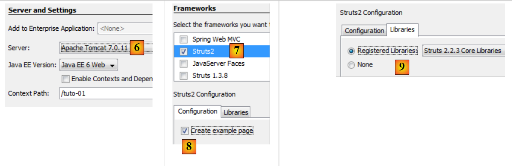
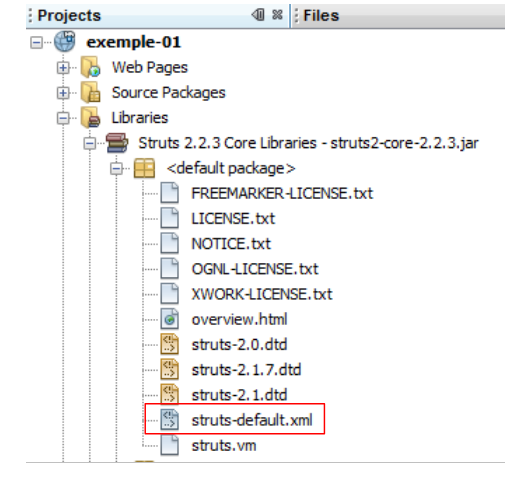

2. A First Example
Most of our examples will be limited to the web layer implemented with Struts 2:
 |
Once the basics are covered, we will examine a more complex example with a multi-tier architecture.
2.1. Generating the example
We are building our first application.
 |
- In [1], we create a new project
- In [2], select the Java Web / Web Application type
- In [3], name the project
- In [4], specify the project location.
- In [5], make the new project the main project.
 |
- In [6], select the Tomcat server. When installing Netbeans 7.01, two servers were installed: Apache Tomcat and Glassfish 3.1.
- In [7], we specify that we will be working with the Struts 2 framework. It is the installation of the Struts 2 plugin that gives us this option. Without the plugin, the Struts 2 framework is not available to us.
- In [8], we are prompted to create the sample project that we will be studying.
- In [9], you can verify which Struts 2 libraries will be used.
 |
- In [10], the generated project. We will come back to this.
- In [11], the project libraries. They were integrated by the Struts 2 plugin. If you do not have the plugin, you can find these libraries in the [lib] folder of the downloaded Struts 2 distribution. You will then follow steps 12 and 13.
2.2. The project generated in the file system
 |
- in [1], the [Projects] tab displays a "developer" view of the project
- in [2], the [Files] tab displays the project folder in the file system
- in [2A], the branch [Web Pages] is represented in [2] by the folder [web] [2B]
- In [3A], the branch [Source Packages] is represented in [2] by the folder [java] [3B]
2.3. The configuration file [META-INF/context.xml]
 |
This file is as follows:
<?xml version="1.0" encoding="UTF-8"?>
<Context antiJARLocking="true" path="/exemple-01"/>
Line 2 indicates that the web application context is /example-01. All Url files of the type [http://machine:port/exemple-01/...] will be processed by this application. You can find this context in the properties of the [2] project: right-click on the project / Properties / Run.
2.4. The [WEB-INF/web.xml] configuration file
 |
Every web application is configured by the [web.xml] file in the application’s [WEB-INF] folder. The generated file is as follows:
<?xml version="1.0" encoding="UTF-8"?>
<web-app version="3.0" xmlns="http://java.sun.com/xml/ns/javaee" xmlns:xsi="http://www.w3.org/2001/XMLSchema-instance" xsi:schemaLocation="http://java.sun.com/xml/ns/javaee http://java.sun.com/xml/ns/javaee/web-app_3_0.xsd">
<filter>
<filter-name>struts2</filter-name>
<filter-class>org.apache.struts2.dispatcher.FilterDispatcher</filter-class>
</filter>
<filter-mapping>
<filter-name>struts2</filter-name>
<url-pattern>/*</url-pattern>
</filter-mapping>
<session-config>
<session-timeout>
30
</session-timeout>
</session-config>
<welcome-file-list>
<welcome-file>example/HelloWorld.jsp</welcome-file>
</welcome-file-list>
</web-app>
- Lines 3–6 define a filter implemented by the Struts 2 class [org.apache.struts2.dispatcher.FilterDispatcher]. This class will act as the C controller for the MVC model.
- Lines 7–10: define a binding between a Url model and the filter that must process the Url files that follow this model. Here, it is specified that any Url (pattern /*) must be processed by the filter named struts2. This is the filter defined in lines 3–6. Therefore, all Url requests will pass through the Struts 2 controller.
- Lines 11–15: define the duration of a user session, here 30 minutes. During various requests, a user is tracked by a session token assigned to them on their first request, which they then systematically send with each new request. This allows the web server to recognize the user and manage a "memory" for them, known as the session. If more than 30 minutes elapse between two requests, a new session token is generated for the user, who thereby loses their "memory" and starts a new one.
- Lines 16–18: define the file to display when the user accesses the web application without requesting a document. Thus, when the requested Url is [http://machine:port/exemple-01], the served Url will be [http://machine:port/exemple-01/example/HelloWord.jsp].
2.5. The [struts.xml] configuration file
 |
The [struts.xml] file is the Struts 2 configuration file. It can be located anywhere within the project’s ClassPath directory. In the Netbeans project above, the project's ClassPath consists of two branches:
- Source Packages
- Libraries
Any folder or library located in these two branches is therefore part of the project's ClassPath. It is common practice to place [struts.xml] in the <default package>. Here, its contents are as follows:
<!DOCTYPE struts PUBLIC
"-//Apache Software Foundation//DTD Struts Configuration 2.0//EN"
"http://struts.apache.org/dtds/struts-2.0.dtd">
<struts>
<include file="example.xml"/>
<!-- Configuration for the default package. -->
<package name="default" extends="struts-default">
</package>
</struts>
- Lines 5 and 10: The root tag of the document is the <struts> tag
- line 6: the file [example.xml] is inserted here. It therefore brings its own configuration. We will come back to this.
- Lines 8–9: define a package named "default" here. A package allows you to configure a group of Struts 2 actions that share the same Url. For example, [/chemin/Action1] and [/chemin/Action2]. You can then define a package for these actions:
<package name="employes" namespace="/employes" extends="struts-default">
... configuration
</package>
The package above is named "employes" and configures the actions in Url/employes/Action. The package can inherit from another package using the "extends" keyword. Above, the "employes" package inherits from the "struts-default" package. This package is located in the [struts-default.xml] file of the struts2-core library.jar:
 |
The "struts-default" package defined in the [struts-default.xml] file configures various settings, including a list of interceptors executed when an action is called. Let’s return to the MVC structure of a Struts 2 application:
 |
To process a Url of the form [http://machine:port/.../Action], the [FilterDispatcher] controller will instantiate the class that implements the requested action and execute one of its methods—by default, a method called *execute. The call to this execute* method will pass through a series of interceptors:
 |
The interceptors and the action all process the same request. The list of interceptors defined in the struts-default package is sufficient most of the time. Therefore, our Struts packages will always extend the struts-default package. To learn what the various interceptors do, refer to Chapter 4 of [ref2].
Let’s return to the struts.xml configuration file:
<!DOCTYPE struts PUBLIC
"-//Apache Software Foundation//DTD Struts Configuration 2.0//EN"
"http://struts.apache.org/dtds/struts-2.0.dtd">
<struts>
<include file="example.xml"/>
<!-- Configuration for the default package. -->
<package name="default" extends="struts-default">
</package>
</struts>
- Line 8: The package named "default" has a special role. It handles actions that have not been configured in the other packages. Here, in lines 8–9, no configuration is specified for the "default" package. We could therefore remove the definition of this package.
Now let’s look at the file [example.xml] included on line 6 of the file [struts.xml]:
<?xml version="1.0" encoding="UTF-8" ?>
<!DOCTYPE struts PUBLIC
"-//Apache Software Foundation//DTD Struts Configuration 2.0//EN"
"http://struts.apache.org/dtds/struts-2.0.dtd">
<struts>
<package name="example" namespace="/example" extends="struts-default">
<action name="HelloWorld" class="example.HelloWorld">
<result>/example/HelloWorld.jsp</result>
</action>
</package>
</struts>
- Line 8: defines a package named example that extends the struts-default package. This package manages Url of type /example/Action (namespace /example).
- Lines 9–11: define an action named HelloWorld (attribute name), which corresponds to Url /example/Helloworld. This action is handled by an instance of the example.HelloWorld class (class attribute).
- The controller [FilterDispatcher] will execute the execute method of this class.
- This method will return a string called the key of navigation.
- The various keys of navigation must be defined using <result name="key"/> tags (line 10). If the name attribute is missing, the "success" key is used by default. This is the case above. Therefore, the execute method of the example.HelloWorld class must return the "success" key to the [FilterDispatcher] controller.
- The [FilterDispatcher] controller then displays the [/example/HelloWorld.jsp] page (line 10).
If we merge the two files [struts.xml] and [example.xml], and remove the default package, which seems unnecessary, everything behaves as if we had reduced the file [struts.xml] to the single file [example.xml].
2.6. The HelloWorld action
 |
According to the analyzed file [struts.xml], the action HelloWorld is triggered when the Url requested by the client is /example/HelloWorld. Its execute method is then executed. It must return a key for navigation. We saw that there was only one: *success, and that the page /example/HelloWorld.jsp* was then sent in response to the user.
The code for the HelloWorld action is as follows:
package example;
import com.opensymphony.xwork2.ActionSupport;
public class HelloWorld extends ActionSupport {
public String execute() throws Exception {
setMessage(getText(MESSAGE));
return SUCCESS;
}
public static final String MESSAGE = "HelloWorld.message";
private String message;
public String getMessage() {
return message;
}
public void setMessage(String message) {
this.message = message;
}
}
- line 5: the HelloWorld class derives from the ActionSupport class in Struts 2. This is almost always the case. This allows you to use certain methods, such as the getText method on line 8.
- Lines 7–10: The `execute` method, which is executed when the Struts controller is invoked. We know that it must return a string, hence its signature on line 7. Here, it will return the constant SUCCESS, which is also defined in ActionSupport. Other constants are defined in this way for the result of the execute method:
SUCCESS | "success" |
ERROR | "error" |
INPUT | "input" |
LOGIN | "login" |
So here, the execute method returns the string "success". Referring to the file [struts.xml], the page /example/HelloWorld.jsp will be returned to the user.
- Line 8: The execute method initializes the message field on line 14 with the value of getText(" HelloWorld.message "). The getText method belongs to the parent class ActionSupport. It retrieves text from a file based on the language used. By default, the package.properties file located in the same package as the action will be used here. This file comes in two versions:
The [package.properties] file is as follows:
It consists of a series of text lines in the key=value format. If this file is used, getText("HelloWorld.message") will have the value Struts is up and running ...
The file [package_es.properties] is as follows:
If the language used by the client browser is Spanish (es attribute, in package_es.properties), getText("HelloWorld.message") will have the value ¡Struts está bien! ... In all other cases, the file [package.properties] will be used.
2.7. The HelloWorld.jsp view
 |
This is the final piece of the Struts puzzle. It is the view that is displayed when the Url /example/HelloWorld is requested. We have seen the maze through which the initial request passed to finally display this response. The page code is as follows:
<%@ page contentType="text/html; charset=UTF-8" %>
<%@ taglib prefix="s" uri="/struts-tags" %>
<html>
<head>
<title><s:text name="HelloWorld.message"/></title>
</head>
<body>
<h2><s:property value="message"/></h2>
<h3>Languages</h3>
<ul>
<li>
<s:url id="url" action="HelloWorld">
<s:param name="request_locale">en</s:param>
</s:url>
<s:a href="%{url}">English</s:a>
</li>
<li>
<s:url id="url" action="HelloWorld">
<s:param name="request_locale">es</s:param>
</s:url>
<s:a href="%{url}">Espanol</s:a>
</li>
</ul>
</body>
</html>
- The page uses Html tags (lines 5, 6, ...) and tags from a library defined on line 3. All <s:xx> tags belong to this library.
- Line 7: The <s:text> tag allows different text to be displayed depending on the client browser’s language. The name attribute specifies the key to search for in the message files. Here, too, the package_xx.properties files will be used. Recall that they contain only a single message with the key HelloWorld.message.
- Line 11: The <s:property name="property"> tag allows you to write the value of a property of an object named ActionContext. This object contains:
- the properties of the action that was executed. name="message" will display the value of the message field of the current action. The methods get and set associated with the field are used to retrieve its value or initialize it. These methods must therefore exist.
- the attributes of the current request denoted as <s:property name="#request['clé']">
- the attributes of the user's session denoted as <s:property name="#session['clé']">
- attributes of the application itself denoted as <s:property name="#application['clé']">
- parameters sent by the client browser, denoted as <s:property name="#parameters['clé']">
- the notation <s:property name="#attr['clé']"> displays the value of an object searched for in the page, the request, the session, and the application, in that order.
- Lines 16–18: The <s:url> tag is used to define a Url. The id attribute assigns a name to the Url that will be created. This name is then used in line 19. The action attribute specifies which action the Url should point to.
- Line 17: The <s:param ..> tag allows you to add parameters to the Url in the form ?param1=value1¶m2=value2&... Here, the added parameter will be ?request_locale=es.
Ultimately, the generated Url will be as follows:
To understand this URL, remember that the page is displayed in two cases:
- upon direct request of the Url [/exemple-01/example/HelloWorld.jsp]
- upon request from the [/exemple-01/example/HelloWorld.action] action
In both cases, the path for Url is /example-01/example. The tag <s:url action= "... "> adds the action defined by the action attribute to this path. This results in /example-01/example/HelloWorld. It then adds the .action suffix to the previous Url, as well as the parameters of the Url if any. The resulting Url /example-01/example/HelloWorld.action?request_locale=en will call the HelloWorld action defined in the [struts.xml] file while passing the request_locale=en parameter. The latter will not be processed by the HelloWorld action but by one of the Struts interceptors, specifically the one that handles page internationalization. The request_locale parameter will be recognized and processed. The page language will change to English (en).
- Line 19: defines a link Html. The href attribute of the <a> tag expects a string. Here, we want to use the value of Url defined on line 16 and id url. To do this, we write href="%{url}". The variable url is evaluated, and its value is assigned to the href attribute. In most cases, variable evaluation is implicit. For example, when we write
<s:property name="message"/>
The value of the message property is displayed, not the string "message". But in other cases, you need to force the evaluation of variables or properties. If we had written href="url", the string url would have been assigned to the href attribute.
- Lines 23–27: create a link Html to change the page language to Spanish.
2.8. Running the application
We launch the project:
 |
- In [1], we launch the execution of the [exemple-01] project. The Tomcat web server is then launched automatically if it was not already running. The Url [/exemple-01] is requested [3]. The [web.xml] file is then used:
<?xml version="1.0" encoding="UTF-8"?>
<web-app version="3.0" xmlns="http://java.sun.com/xml/ns/javaee" xmlns:xsi="http://www.w3.org/2001/XMLSchema-instance" xsi:schemaLocation="http://java.sun.com/xml/ns/javaee http://java.sun.com/xml/ns/javaee/web-app_3_0.xsd">
<filter>
<filter-name>struts2</filter-name>
<filter-class>org.apache.struts2.dispatcher.FilterDispatcher</filter-class>
</filter>
<filter-mapping>
<filter-name>struts2</filter-name>
<url-pattern>/*</url-pattern>
</filter-mapping>
<session-config>
<session-timeout>
30
</session-timeout>
</session-config>
<welcome-file-list>
<welcome-file>example/HelloWorld.jsp</welcome-file>
</welcome-file-list>
</web-app>
- Because no page is specified in the requested Url [/exemple-01], Tomcat will use the <welcome-file-list> tag from lines 16 and 18. Therefore, the Url /example-01/example/HelloWorld.jsp will be served.
- Because Struts 2 processes all Url (lines 8 and 9), this Url will be filtered by Struts. Since it does not correspond to an action but to a JSP page, the latter will be displayed.
- What we see in [2] is therefore the HelloWorld.jsp page that we studied.
- In [4], we can see that the tag <title><s:text name="HelloWorld.message"/></title> tag did not take effect, nor did the <h2><s:property value="message"/></h2> tag. The reason is that no action was called. The list of interceptors that run before the action was therefore not executed, including the one that handles internationalization. The internationalization tag <s:text ...> could not be processed correctly. Furthermore, the message property, which references the message field of the Action1 class, does not exist. Hence the lack of display.
Now, let’s follow the link [English]. We get the following page:
 |
- in [1], the requested Url. We have explained the formation of this Url. This time, a Struts action is requested: the HelloWorld action defined in [example.xml].
<struts>
<package name="example" namespace="/example" extends="struts-default">
<action name="HelloWorld" class="example.HelloWorld">
<result>/example/HelloWorld.jsp</result>
</action>
</package>
</struts>
- The execute method of this action has been executed. We saw that it returned the key "success." From line 4 above, we can deduce that the page /example/HelloWorld.jsp is returned to the client. This is what we see in [3].
- In [1], we see that the requested Url is configured by the parameter request_locale=en. The language of the pages will now be English. This language selection is stored in the user’s session, which will retain this choice until the user changes it.
- In [2] and [3], we see internationalization in action. The tags <title><s:text name="HelloWorld.message"/></title> and <h2><s:property value="message"/></h2> have worked this time.
If we now select the link [Espanol], we get the page in Spanish:
 |
2.9. Conclusion
We examined an example automatically generated by the Struts 2 plugin for Netbeans. We found that it was quite difficult to track the processing of a request. The following elements are involved:
- the configuration [web.xml], [struts.xml]
- The executed action: interceptors and the execute method.
At first, the mechanics of Struts 2 may seem complex. It takes a little time to get used to it. We will now present a series of examples, each of which highlights a specific aspect of Struts.